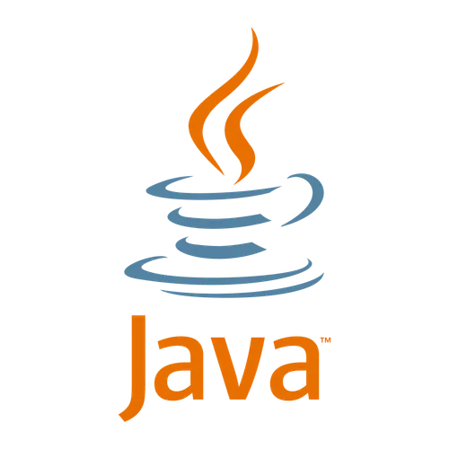

Breaking News!!!
Quem será Átila?
| SPECIAL EDITION |
|
HOME | CONTATO |
|
Breaking News!!! Quem será Átila? |
||

|
Sobre MimMeu nome é Átila Oliveira Moura e sou uma estudante de Engenharia de Computação, na Universidade Federal do Ceará (UFC). Me interessei pelo curso quando estava no ensino médio técnicode informática, pois no meu 3ºano surgiu a oportunidade de fazer um curso de Eletrônica Digital com Arduino. No decorrer do curso, fui gostando mais e mais a cada novo projeto que ia sendo feito e no fim do curso percebi que era uma área interesante. Por fim,no final do meu ensino médio fui procurar curso de ensino superior que tivesse algo voltado para essa parte e que estivesse próximo a minha cidade, e quando abriu o SISU me canditatei ao curso na UFC - Sobral e é onde ainda continuo minha graduação. Além disso, gosto muito de tecnologia e também foi uma das causas que ingressei no curso voltado na área, atualmente venho estudando sobre desenvolvimento web,mas já tenho conhecimento em algumas linguagens de programação (C, Python, e Java) que adquiri durante os semestres anteriores do meu curso. Além disso, sou ótima para me comunicar e expressar. |
Linguagens de Programação que sei |
||
|
|
|
 |
|
Tenho conhecimento sólido em C, incluindo estrutura da linguagem, uso de funções e manipulação de ponteiros. Também trabalho com estruturas de dados como listas, pilhas e árvores, implementando soluções com alocação dinâmica de memória. |
Tenho conhecimentos em Python, incluindo declaração de variáveis, estruturas condicionais (if, else, elif), listas e arrays. Também sei criar e utilizar funções para organizar e reutilizar código de forma eficiente. |
Tenho conhecimentos em Java, incluindo declaração de variáveis, uso de estruturas condicionais e loops. Também sei criar classes e objetos, aplicando os princípios da programação orientada a objetos para organizar e estruturar o código. |
Meus trabalhos
Se você quiser ver meus trabalhos, acesse meu GitHub
|
||
Todos os direitos reservados |
||